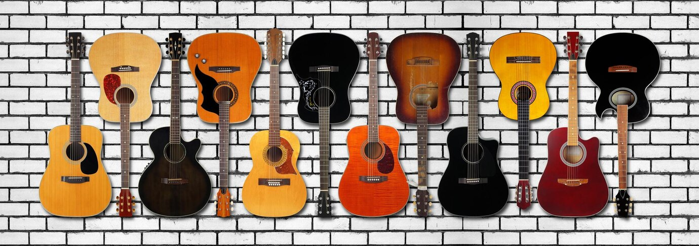

Auf diesen Seiten möchte ich etwas über Gitarren schreiben und dir bei deiner Kaufentscheidung helfen :)
Ich möchte Dir den Unterschied von Western- und Konzertgitarren
erklären und außerdem Empfehlungen geben welche Gitarrenart für
dich besser passt.
Ich selber spiele seit ca. 10 Jahren Gitarre, schon immer auf einer Konzertgitarre.
Doch welche Gitarrenart ist nun besser für Dich?
Ich würde sagen es ist abhängig davon, ob du Anfänger bist und welche Art von Musik du spielen möchtest.
Wie in den einzelnen Unterseiten beschrieben, eignen sich Konzertgitarren für Anfänger, jedoch kann man auch
direkt mit einer Westerngitarre starten, vielleicht dann mit etwas dünneren Saiten (das wäre jedoch ein
anderes
Thema),
die etwas anfängerfreundlicher und weniger schmerzhaft sind.
Mit der Zeit bildet sich sowieso eine kleine Hornhaut auf den Fingerkuppen, wodurch das Greifen ebenfalls
weniger schmerzhaft wird.
Also: Üben, üben, üben!
Und nicht immer nur nach einer neuen Gitarre schauen ;)
Ich hoffe ich konnte Dir helfen bei Deiner Kaufentscheidung und wünsche Dir ganz viel Spaß mit Deiner
neuen
Gitarre!
